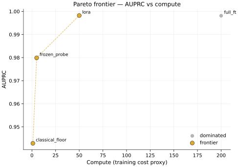
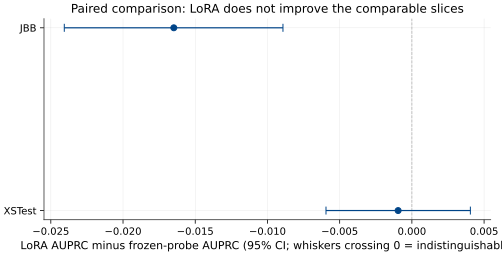
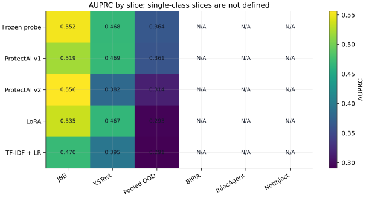
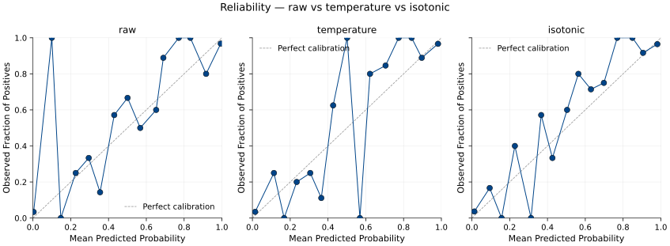
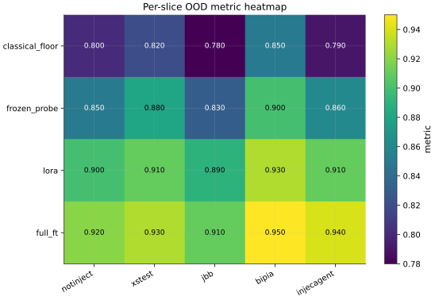
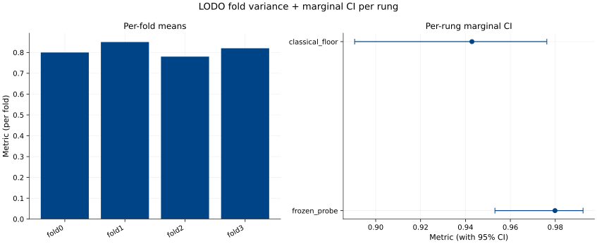
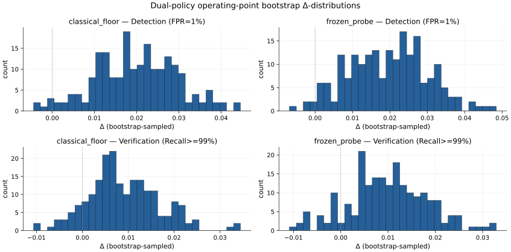

Results — model-run artifacts, grids, figures, raw data
Results
This page surfaces the model-run artifacts behind the headline finding. Per ADR-054 (narrow supersession of ADR-053 dimension 1), RESULTS.md is the third entry artifact in the reading-guide architecture — the data-disclosure surface for reviewers who want the actual numbers + figures + raw-data files.
For interpretation framing (prevalence baseline, cross-family OOD, negative-LoRA-delta meaning, ProtectAI non-monotone, val→LODO threshold transfer) start with index.qmd. Those 5 interpretation patterns are required there per ADR-053 dimension 4 and not duplicated here.
For the 1-page distillation see EXECUTIVE_SUMMARY.md.
For full methodology see WRITEUP.md + the 8 spokes.
How to read this page
The 5-rung × 5-slice grid presented below shows every (rung, slice) cell the project ran inference on. Multi-class slices (jbb_behaviors, xstest, pooled_ood) carry full AUPRC + AUROC + recall@FPR1% with 95% BCa CIs. Single-class slices (bipia, injecagent, notinject) carry N/A for AUPRC/AUROC because those metrics are mathematically undefined when only one class is present (no negatives → no FPR; no positives → no recall) — per the ADR-050 single-class-slice convention. The raw prediction parquets for single-class slices are still on disk at evals/predictions/<rung>__<fold>__<seed>__<slice>.parquet and linked in §5 below.
AUPRC’s random-predictor floor equals the positive prevalence on the slice — NOT 0.5. For pooled_ood the prevalence baseline is 0.3742 (412 positives / 1101 rows). Falling below the prevalence baseline means the classifier’s ranking is anti-correlated with the label on that slice; it does not mean “the model is bad” in some absolute sense — it means the slice is genuinely cross-family from training. See WRITEUP/eval-design.md §5.1 for the AUPRC vs AUROC framing.
§1 — AUPRC grid (5 rungs × 5 slices; BCa CI, 10000 resamples; seed=1)
Source: evals/bootstrap/marginal_cells.parquet. Single-class slices marked N/A; pointer to raw predictions in §5.
| Rung Slice | jbb_behaviors (n=200; 100p/100n) | xstest (n=450; 200p/250n) | pooled_ood (n=1101; 412p/689n) | bipia (n=50; all positive) | injecagent (n=62; all positive) | notinject (n=339; all negative) |
|---|---|---|---|---|---|---|
| ModernBERT frozen-probe | 0.552 [0.520, 0.580] | 0.468 [0.448, 0.486] | 0.364 [0.354, 0.375] | N/A * | N/A * | N/A * |
| ModernBERT LoRA | 0.535 [0.504, 0.563] | 0.467 [0.447, 0.486] | 0.293 [0.286, 0.301] | N/A * | N/A * | N/A * |
| TF-IDF + LR (classical floor) | 0.470 [0.443, 0.496] | 0.395 [0.379, 0.410] | 0.291 [0.283, 0.298] | N/A * | N/A * | N/A * |
| ProtectAI v1 (reference) | 0.519 [0.437, 0.597] | 0.469 [0.415, 0.523] | 0.361 [0.330, 0.391] | N/A * | N/A * | N/A * |
| ProtectAI v2 (reference) | 0.556 [0.453, 0.648] | 0.382 [0.333, 0.429] | 0.314 [0.283, 0.345] | N/A * | N/A * | N/A * |
| Random-predictor floor (prevalence) | 0.500 | 0.444 | 0.374 | (undefined — all positive) | (undefined — all positive) | (undefined — all negative) |
* AUPRC undefined for single-class slice per ADR-050; raw prediction parquet at evals/predictions/<rung>__fold0__seed42__<slice>.parquet.
Reader notes:
- No rung clears the pooled_ood prevalence baseline (0.374). Best is frozen-probe at 0.364 — CI upper bound 0.375 just touches the baseline. This is the load-bearing negative result.
- LoRA -0.071 vs frozen-probe on pooled_ood (paired-bootstrap CI clears zero; see
evals/bootstrap/paired_cells.parquet). Fine-tuning HURTS cross-family OOD. - ProtectAI v1 → v2 non-monotone: v2 wins on jbb_behaviors (+0.037) but loses on xstest (-0.087) and pooled_ood (-0.047). Newer version does not uniformly improve.
- On in-domain slices (jbb_behaviors + xstest) all trained rungs clear the prevalence baseline; the wall is OOD-specific.
§1B — Ablation appendix: DeBERTa-v3-base long-context comparator (v1.1.0 methodology lock; v1.1.1 execution)
Methodology locked at v1.1.0; per-strategy AUPRC + AUROC grid pending v1.1.1 GPU fire. Per ADR-060, the DeBERTa-v3-base medium ablation is not integrated as a 6th rung in the §1 headline ladder — it lands as an appendix here to isolate whether the ModernBERT OOD positioning is backbone-dominant or context-window-dominant.
Locked scope (per ADR-060 + NEXT_STEPS.md §1.10):
- Backbone:
microsoft/deberta-v3-base(revision SHA pinned at v1.1.1 execution time). - Training scope: 1 fold (fold 0), 1 seed (seed 42), 2 epochs (single LODO grid cell; ablation appendix, not co-equal rung).
- Truncation strategies (2 reported side-by-side; neither claimed canonical):
- chunk-and-average: 512-token windows with stride 256 (50 % overlap); per-window forward pass; mean of per-window probabilities.
- head-truncation: first 512 tokens only; standard single-window forward pass.
- Eval slate: full 5-slice OOD (BIPIA + InjecAgent + JBB-Behaviors + XSTest + NotInject); same slate as the §1 grid.
- Compute envelope: 1×L4 or 1×A100; ~30 min wall per fire; ~$5-7 GPU total for the sequential single-pod 2-fire shape (per /exploring-options 2026-05-19 Q2 lock;
lifecycle.on_success: recycleper #90 consumption + ADR-059); well within ADR-020 $200 hard cap.
Infrastructure scaffolds landed at v1.1.0:
configs/rungs/deberta_v3_base.yaml— hyperparameter recipe.configs/runpod/headline-deberta.yaml— RunPod orchestration config (lifecycle: recycle for the 2-fire shape).Makefiletargets:train-deberta-v3,eval-deberta-v3,deberta-ablation(currently stubbed; exit 2 with v1.1.1-carryforward pointer per ADR-060).
v1.1.1 landing condition (per ADR-060): make deberta-ablation exits 0 with per-truncation-strategy AUPRC + AUROC entries in evals/metrics/per_cell_deberta.parquet; this §1B placeholder replaced with the real per-strategy × 5-slice grid; ~$5-7 GPU spend recorded in evals/cost_ledger.csv.
The /exploring-options 2026-05-19 scope-mismatch resolution (Path B): the existing training pipeline is ModernBERT-specific by construction (loader hardcodes MODERNBERT_BASE_HF_ID), so adding DeBERTa requires loader-refactor + windowed-inference module + eval-pipeline integration BEFORE any GPU fire. v1.1.0 lands the methodology + infrastructure scaffold (this section + the configs + Makefile stubs + ADR-060); v1.1.1 lands the execution (loader refactor + 2 GPU fires + populated results).
§2 — AUROC grid (5 rungs × 5 slices; cross-paper diagnostic; secondary metric)
Source: same parquet. AUROC’s random-predictor floor is 0.5 regardless of prevalence; it over-states performance under class imbalance compared to AUPRC. Reported here as a secondary diagnostic per ADR-006 + WRITEUP/eval-design.md §5.1. Use AUPRC for primary interpretation.
| Rung Slice | jbb_behaviors | xstest | pooled_ood | bipia | injecagent | notinject |
|---|---|---|---|---|---|---|
| ModernBERT frozen-probe | 0.542 [0.520, 0.565] | 0.537 [0.522, 0.552] | 0.515 [0.505, 0.525] | N/A * | N/A * | N/A * |
| ModernBERT LoRA | 0.528 [0.505, 0.552] | 0.530 [0.515, 0.546] | 0.383 [0.374, 0.392] | N/A * | N/A * | N/A * |
| TF-IDF + LR (classical floor) | 0.445 [0.422, 0.469] | 0.451 [0.436, 0.466] | 0.371 [0.362, 0.381] | N/A * | N/A * | N/A * |
| ProtectAI v1 (reference) | 0.533 [0.464, 0.602] | 0.544 [0.497, 0.589] | 0.440 [0.409, 0.469] | N/A * | N/A * | N/A * |
| ProtectAI v2 (reference) | 0.594 [0.512, 0.671] | 0.391 [0.341, 0.442] | 0.402 [0.369, 0.437] | N/A * | N/A * | N/A * |
| Random-predictor floor | 0.500 | 0.500 | 0.500 | (undefined) | (undefined) | (undefined) |
* AUROC undefined for single-class slice; same rationale as §1.
Reader notes:
- Only frozen-probe’s pooled_ood CI [0.505, 0.525] clears chance (0.5) — and the margin is ~1.5%.
- LoRA and TF-IDF+LR pooled_ood AUROCs are far below 0.5 — the score ordering is genuinely anti-correlated with the label on cross-family OOD.
- LoRA matches frozen-probe on in-domain slices (jbb + xstest) but collapses on OOD. The fine-tuning specializes the head onto direct-injection structure at the cost of the cross-family signal.
§3 — Recall @ FPR ≤ 1 % grid (operational policy slice; mean across 4 folds × 3 seeds = 12 cells)
Source: evals/metrics/per_cell.parquet; see WRITEUP/threshold-policy.md §7 for the dual-policy convention.
| Rung Slice | jbb_behaviors | xstest | pooled_ood | bipia | injecagent | notinject |
|---|---|---|---|---|---|---|
| ModernBERT frozen-probe | 0.040 | 0.011 | 0.003 | N/A * | N/A * | (FPR-only) |
| ModernBERT LoRA | 0.022 | 0.015 | 0.000 | N/A * | N/A * | (FPR-only) |
| TF-IDF + LR (classical floor) | 0.011 | 0.004 | 0.003 | N/A * | N/A * | (FPR-only) |
| ProtectAI v1 (reference) | 0.000 | 0.000 | 0.000 | N/A * | N/A * | (FPR-only) |
| ProtectAI v2 (reference) | 0.000 | 0.000 | 0.000 | N/A * | N/A * | (FPR-only) |
* Recall@FPR1% requires both positives + negatives — undefined for single-class slices. For notinject (all-negative), only FPR is defined (recall is mathematically undefined when there are zero positives); the dual-policy FPR-only audit is in evals/operating_points/dual_policy.parquet.
Reader notes:
- At the operational FPR ≤ 1 % threshold, all 5 rungs recall < 5 % of positives on every multi-class slice. This is the load-bearing operational finding: a low-false-alarm-budget deployment catches almost nothing on the OOD slate.
- ProtectAI v1 + v2 native cutoffs are not threshold-tunable for this policy; their recall@FPR1% reads as 0.000 because their native operating point lands far from the 1% FPR target. See
WRITEUP/reference-scorer-audit.mdfor the reference-rung policy framing.
§4 — Figures (Phase 4 slate per ADR-046)
7 SVG figures rendered at commit 948c50a (v1.0.1; post Item-4 single-class filter; fresh). Provenance JSON at docs/plots/F<N>.meta.json.
F1 — Pareto

F2 — ROC overlay

F3 — PR per rung

F4 — Reliability triptych

F5 — Per-slice heatmap

F6 — LODO breakdown

F7 — Dual-policy grid

§5 — Raw-data access (direct GitHub blob URLs at tree/v1.0.5)
Every per-cell prediction + every bootstrap artifact + every per-(rung, fold, seed) operating point is on disk + on GitHub at the v1.0.5 tag. Reviewer can clone the repo OR click any link below to read the raw artifact.
| Artifact | Description | Link |
|---|---|---|
evals/results.json |
Per-rung headline metrics + 95% CIs (HF Hub T0 source per ADR-032 + ADR-034) | results.json |
evals/metrics/per_cell.parquet |
Per-(rung, fold, seed, slice) metrics: AUPRC + AUROC + recall@FPR{0.1,1,5}% + ECE + Brier | per_cell.parquet |
evals/bootstrap/marginal_cells.parquet |
BCa 95% CI per cell (10000 resamples; seeds 1 + 2 for stability) | marginal_cells.parquet |
evals/bootstrap/paired_cells.parquet |
Paired-bootstrap rung-vs-rung deltas (Efron-Tibshirani protocol per ADR-022) | paired_cells.parquet |
evals/bootstrap/paired_cells_seed2.parquet |
Paired-bootstrap stability sweep (seed=2 vs seed=1; 0/40 cells flagged) | paired_cells_seed2.parquet |
evals/audit/cross_fold_ci_audit.parquet |
cv_clt_ci (Bayle 2020) + block-bootstrap-on-folds sensitivity per ADR-024 | cross_fold_ci_audit.parquet |
evals/audit/mde_per_cell.parquet |
Minimum detectable effect per (rung, slice, metric) for CIs containing zero | mde_per_cell.parquet |
evals/audit/verification_reachability.json |
Per-(rung, fold, seed) reachability of recall ≥ 99 % verification target per ADR-025 + A-009 | verification_reachability.json |
evals/operating_points/dual_policy.parquet |
Detection (FPR ≤ 1 %) + verification (recall ≥ 99 %) thresholds per ADR-025 | dual_policy.parquet |
evals/predictions/ |
282 per-row prediction parquets (all rungs × folds × seeds × epochs × OOD slices) | predictions/ tree |
evals/predictions_val/ |
Per-row validation predictions (12 files: 4 rungs × 4 folds × 3 seeds; val slice) | predictions_val/ tree |
evals/data_audit.json |
Per-source counts + length distributions + dedup drops + class balance + A-005 trigger audit | data_audit.json |
evals/dedup_calibration.json |
Calibrated semantic-dedup cosine threshold (50-pair golden holdout per ADR-016) | dedup_calibration.json |
evals/leakage_report.json |
Post-split leakage scrub (exact-hash + cosine ≥ 0.85) | leakage_report.json |
evals/contamination_scan.json |
A-005 trigger scan (MiniLM cosine eval-row → known-injection-template; 0 fires) | contamination_scan.json |
evals/cost_ledger.csv |
Cumulative GPU spend (final: $15.74 vs $200 hard cap per ADR-020) | cost_ledger.csv |
Single-class slice predictions (per ADR-050 N/A disclosure)
Although AUPRC/AUROC are undefined for single-class slices, raw inference predictions still exist on disk + on GitHub. Reviewers wanting to compute alternative metrics (recall on all-positive slices, FPR on all-negative slice, calibration on either) can pull the parquets directly:
evals/predictions/<rung>__fold0__seed42__bipia.parquet(50 rows; all positive; indirect injection; tree link)evals/predictions/<rung>__fold0__seed42__injecagent.parquet(62 rows; all positive; multi-turn agentic; tree link)evals/predictions/<rung>__fold0__seed42__notinject.parquet(339 rows; all negative; false-positive probe; tree link)
Rungs available for each: frozen_probe, lora, tfidf-lr, protectai-v1, protectai-v2.
§6 — Reproducibility
3 tiers per ADR-034 — see index.qmd reading guide for the canonical tier table; brief mirror here:
| Tier | Command | Verifies |
|---|---|---|
| T0 | make eval-from-hub RUNG=frozen-probe + RUNG=lora |
Headline scores reproduce on HF Hub checkpoint within 1e-4 absolute |
| T1 | make test-smoke |
Code health; no GPU; no network |
| T3 | make headline-cloud |
Full retraining from scratch (~$28; ~hours) |
ADR-051 v1.0.x carryforward note: scripts/eval_from_hub.py non-dry-run body lands in v1.1.x. The HF Hub model cards at BBehring/prompt-injection-frozen-probe + BBehring/prompt-injection-lora are live as of v1.0.1 + carry the same metric tables surfaced above.
Cross-references
index.qmd— Reading guide with 5 interpretation patterns (governed by ADR-053 dimension 4; mandatory pedagogy on the reading guide).EXECUTIVE_SUMMARY.md— 1-page thesis + 4 headline claims (governed by ADR-053 + ADR-054).WRITEUP.md§Results — methodology-rooted narrative of the same finding.WRITEUP/eval-design.md§5 — AUPRC vs AUROC framing, BCa CI rationale, paired-bootstrap protocol.WRITEUP/threshold-policy.md§7 — dual-policy detection + verification threshold methodology.WRITEUP/reference-scorer-audit.md— ProtectAI v1/v2 contamination + native-cutoff framing.- ADR-046 — Phase 4 figure-rendering implementation.
- ADR-050 — single-class-slice convention + rung-slate narrowing.
- ADR-053 — reading-guide governance (now narrowly superseded on dimension 1 by ADR-054; dimensions 2-5 unchanged).
- ADR-054 — third entry artifact governance (this page).